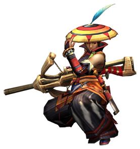

轻弩
出自多玩《怪物猎人P3》数据库
 武器：太刀 - 大剑 - 片手剑 - 斩击斧 - 双刀 - 锤子 - 长枪 - 铳枪 - 狩猎笛 - 弓 - 轻弩 - 重弩
武器：太刀 - 大剑 - 片手剑 - 斩击斧 - 双刀 - 锤子 - 长枪 - 铳枪 - 狩猎笛 - 弓 - 轻弩 - 重弩
|  |
|
注：
1，速射/隙一列中，前面的数值代表该弩可以速射的子弹类型，缩写介绍见下面说明，间隔代表一次速射与一次速射之间的间隙。
2，一般、状态、属性等弹后面的数值（4/4/-）分别对应每个LV等级的弹药数量，比如通4/4/-，就代表这个弩最大可以上4发LV1通常弹、4发LV2通常弹、不能上LV3通常弹
3，弹药缩写对照：
通：通常弹 贯：贯通弹 散：散弹 彻：穿甲榴弹
扩：扩散弹 回：回复弹 毒：毒弹 麻：麻痹弹
睡：睡眠弹 减：减气弹 灭龙：灭龙弹
4，武器名称前的小图标 分别代表稀有度1-7
武器派生
古结云派生系
| 名称 | 攻击 | 速射/间隔 | 弹 | 会心 | 孔 | 等级 | |||||||
| 一般 | 状态 | 属性 | 特殊 | ||||||||||
| 古结云弩 │ │ | 50 | - | 通 贯 散 彻 扩 | 4/4/- -/-/- 2/-/- -/-/- -/-/- | 回 毒 麻 睡 减 | 2/- 2/- -/- 2/- 2/- | 火 水 雷 冰 龙 | - - - - - | 捕 染 鬼 硬 斩 | 2 2 - - - | 0% | --- | 下位 |
| │ │ └ 结云弩 │ │ | 70 | 通1(5)/小 | 通 贯 散 彻 扩 | 4/5/- 3/-/- 2/-/- 1/-/- -/-/- | 回 毒 麻 睡 减 | 2/- 2/- -/- 2/- 2/- | 火 水 雷 冰 龙 | - - - - - | 捕 染 鬼 硬 斩 | 2 2 1 1 - | 0% | --- | 下位 |
| │ │ ├ 结云弩改 │ │ │ │ | 90 | 通1(5)/小 | 通 贯 散 彻 扩 | 5/5/6 3/-/- 2/-/- 1/-/- -/-/- | 回 毒 麻 睡 减 | 2/- 2/- -/- 2/- 2/- | 火 水 雷 冰 龙 | - - - - - | 捕 染 鬼 硬 斩 | 2 2 1 1 - | 0% | --- | 下位 |
| │ │ │ │ │ ├ 吐炎狗龙 │ │ │ │ │ │ | 100 | 贯1(3)/中 | 通 贯 散 彻 扩 | 4/3/- 3/3/- -/-/- 1/-/- -/-/- | 回 毒 麻 睡 减 | 2/- 2/1 -/- 1/- -/- | 火 水 雷 冰 龙 | - - - - - | 捕 染 鬼 硬 斩 | 2 2 - - 2 | 0% | O-- | 下位 |
| │ │ │ │ │ │ │ │ └ 吐炎狗龙改 │ │ │ │ │ │ | 120 | 贯1(3)/中 | 通 贯 散 彻 扩 | 4/3/- 3/4/- -/-/- 2/-/- -/-/- | 回 毒 麻 睡 减 | 2/- 3/2 -/- 1/- -/- | 火 水 雷 冰 龙 | - - - - - | 捕 染 鬼 硬 斩 | 2 2 - - 2 | 10% | O-- | 下位 |
| │ │ │ │ │ │ │ │ └ 诱眠杀机 │ │ │ │ │ │ | 140 | 贯1(3)/中 睡1(2)/大 | 通 贯 散 彻 扩 | 4/3/- 3/4/5 -/-/- 2/-/- -/-/- | 回 毒 麻 睡 减 | 2/- 4/2 -/- 1/- -/- | 火 水 雷 冰 龙 | - - - - - | 捕 染 鬼 硬 斩 | 2 2 - - 2 | 10% | O-- | 下位 |
| │ │ │ │ │ │ │ │ └ 诱眠强轻弩 │ │ │ │ | 170 | 贯1(3)/中 睡1(2)/大 | 通 贯 散 彻 扩 | 4/3/- 3/5/5 -/-/- 2/-/- -/-/- | 回 毒 麻 睡 减 | 2/- 4/3 -/- 1/- -/- | 火 水 雷 冰 龙 | - - - - - | 捕 染 鬼 硬 斩 | 2 2 - - 3 | 10% | OO- | 上位 |
| │ │ │ │ │ └ 土砂轻弩 │ │ │ │ | 160 | - | 通 贯 散 彻 扩 | 5/6/8 2/-/- 2/-/- -/-/- -/-/- | 回 毒 麻 睡 减 | -/- -/- 2/- -/- 2/1 | 火 水 雷 冰 龙 | - 3 - - - | 捕 染 鬼 硬 斩 | 2 2 - 1 - | 0% | O-- | 下位 |
| │ │ │ │ │ └ 土砂轻弩改 │ │ │ │ | 190 | - | 通 贯 散 彻 扩 | 6/7/9 2/2/- 2/-/- -/-/- -/-/- | 回 毒 麻 睡 减 | -/- -/- 2/- -/- 3/2 | 火 水 雷 冰 龙 | - 3 - - - | 捕 染 鬼 硬 斩 | 2 2 - 1 - | 0% | O-- | 下位 |
| │ │ │ │ │ └ 潜口轻弩 │ │ │ │ | 220 | - | 通 贯 散 彻 扩 | 6/8/10 3/2/- 2/-/- -/-/- -/-/- | 回 毒 麻 睡 减 | -/- -/- 2/- -/- 3/2 | 火 水 雷 冰 龙 | - 4 - - - | 捕 染 鬼 硬 斩 | 2 2 - 1 - | 0% | O-- | 上位 |
| │ │ │ │ │ └ 冰碎喷枪 │ │ │ │ | 240 | - | 通 贯 散 彻 扩 | 6/9/10 3/2/- 2/-/- -/-/- -/-/- | 回 毒 麻 睡 减 | -/- -/- 2/- -/- 3/2 | 火 水 雷 冰 龙 | - 4 - 3 - | 捕 染 鬼 硬 斩 | 2 2 - 1 - | 0% | O-- | 上位 |
| │ │ │ │ │ └ 冰碎发射器 │ │ | 250 | - | 通 贯 散 彻 扩 | 6/9/12 3/2/- 2/-/- -/-/- -/-/- | 回 毒 麻 睡 减 | -/- -/- 2/- -/- 3/2 | 火 水 雷 冰 龙 | - 4 - 3 - | 捕 染 鬼 硬 斩 | 2 2 - 1 - | 0% | O-- | 上位 |
| │ │ └ 水兽射手 │ │ | 110 | - | 通 贯 散 彻 扩 | 4/4/4 -/-/- 4/4/- -/-/- 1/-/- | 回 毒 麻 睡 减 | 3/- 2/- -/- -/- -/- | 火 水 雷 冰 龙 | - 3 - - - | 捕 染 鬼 硬 斩 | 2 2 - - - | 0% | --- | 下位 |
| │ │ └ 水兽强射手 │ │ | 140 | 水(3)/小 | 通 贯 散 彻 扩 | 4/4/5 -/-/- 4/5/- -/-/- 1/-/- | 回 毒 麻 睡 减 | 3/- 2/- -/- -/- -/- | 火 水 雷 冰 龙 | - 3 - - - | 捕 染 鬼 硬 斩 | 2 2 - - - | 0% | --- | 下位 |
| │ │ └ 水弹海绵 │ │ | 150 | 水(3)/小 | 通 贯 散 彻 扩 | 4/5/5 -/-/- 4/5/- -/-/- 1/-/- | 回 毒 麻 睡 减 | 3/- 2/- -/- -/- -/- | 火 水 雷 冰 龙 | - 3 - - - | 捕 染 鬼 硬 斩 | 2 2 - - - | 0% | --- | 下位 |
| │ │ └ 冰雨海绵 │ │ | 190 | 水(3)/小 毒1(3)/大 | 通 贯 散 彻 扩 | 4/5/6 -/-/- 5/5/- -/-/- 1/-/- | 回 毒 麻 睡 减 | 3/- 3/2 -/- -/- -/- | 火 水 雷 冰 龙 | - 4 - - - | 捕 染 鬼 硬 斩 | 2 2 - 1 - | 0% | --- | 上位 |
| │ │ │ └ 诺亚·咆哮 | 220 | 水(3)/小 毒1(3)/大 | 通 贯 散 彻 扩 | 5/5/6 -/-/- 6/6/- -/-/- 1/-/- | 回 毒 麻 睡 减 | 3/- 3/2 -/- -/- -/- | 火 水 雷 冰 龙 | - 5 - - - | 捕 染 鬼 硬 斩 | 2 2 - 1 - | 0% | --- | 上位 |
十字弩炮派生系
| 名称 | 攻击 | 速射/间隔 | 弹 | 会心 | 孔 | 等级 | |||||||
| 一般 | 状态 | 属性 | 特殊 | ||||||||||
| 十字弩炮 │ │ | 80 | - | 通 贯 散 彻 扩 | 4/4/5 -/-/- 4/-/- -/-/- 1/-/- | 回 毒 麻 睡 减 | 2/- -/- 2/- -/- -/- | 火 水 雷 冰 龙 | 2 - - - - | 捕 染 鬼 硬 斩 | 2 2 - - - | 0% | --- | 下位 |
| │ │ └ 十字弩炮改 │ │ | 100 | 散1(3)/中 | 通 贯 散 彻 扩 | 4/4/5 -/-/- 4/5/- -/-/- 1/-/- | 回 毒 麻 睡 减 | 2/- -/- 2/- -/- -/- | 火 水 雷 冰 龙 | 3 - - - - | 捕 染 鬼 硬 斩 | 2 2 - - - | 0% | --- | 下位 |
| │ │ └ 十字迅雷弩 │ │ | 130 | 散1(3)/中 | 通 贯 散 彻 扩 | 4/4/5 -/-/- 4/5/- -/-/- 1/-/- | 回 毒 麻 睡 减 | 2/- -/- 2/- -/- -/- | 火 水 雷 冰 龙 | 3 - - - - | 捕 染 鬼 硬 斩 | 2 2 - - - | 0% | --- | 下位 |
| │ │ ├ 女武神之焰 │ │ │ │ | 150 | 散1(3)/中 散2(2)/中 | 通 贯 散 彻 扩 | 4/4/5 2/-/- 4/5/- 2/-/- 1/-/- | 回 毒 麻 睡 减 | 2/- 2/1 2/- -/- -/- | 火 水 雷 冰 龙 | 4 - - - - | 捕 染 鬼 硬 斩 | 2 2 - - - | 0% | --- | 下位 |
| │ │ │ │ │ └ 女武神暴炎 │ │ │ │ | 190 | 散1(3)/中 散2(2)/中 | 通 贯 散 彻 扩 | 4/5/6 2/-/- 4/5/5 2/-/- 1/-/- | 回 毒 麻 睡 减 | 2/- 4/2 2/- -/- -/- | 火 水 雷 冰 龙 | 4 - - - - | 捕 染 鬼 硬 斩 | 2 2 - - - | 0% | --- | 上位 |
| │ │ │ │ │ └ 女武神撼炎 │ │ │ │ | 200 | 散1(3)/中 散2(2)/中 | 通 贯 散 彻 扩 | 5/5/6 3/2/- 4/5/5 2/-/- 1/-/- | 回 毒 麻 睡 减 | 2/- 4/2 2/- -/- -/- | 火 水 雷 冰 龙 | 5 - - - - | 捕 染 鬼 硬 斩 | 2 2 - - - | 0% | --- | 上位 |
| │ │ │ │ │ └ 缭乱的对弩 │ │ | 230 | 散1(3)/中 散2(2)/中 贯1(3)/中 | 通 贯 散 彻 扩 | 5/6/9 3/3/3 4/5/5 2/-/- 1/-/- | 回 毒 麻 睡 减 | 2/1 4/2 2/1 -/- -/- | 火 水 雷 冰 龙 | 5 - - - - | 捕 染 鬼 硬 斩 | 2 2 1 - - | 0% | --- | 上位 |
| │ │ ├ 猛毒之礼 │ │ │ │ | 160 | 毒1(3)/大 | 通 贯 散 彻 扩 | 6/6/7 3/-/- 2/-/- -/-/- -/-/- | 回 毒 麻 睡 减 | 3/1 3/2 2/- -/- 2/- | 火 水 雷 冰 龙 | - - - 3 - | 捕 染 鬼 硬 斩 | 2 2 - 1 - | -10% | O-- | 下位 |
| │ │ │ │ │ └ 猛毒之礼改 │ │ │ │ | 180 | 毒1(3)/大 毒2(2)/大 | 通 贯 散 彻 扩 | 6/7/9 3/-/- 2/-/- -/-/- -/-/- | 回 毒 麻 睡 减 | 3/1 3/2 2/- -/- 2/1 | 火 水 雷 冰 龙 | - - - 4 - | 捕 染 鬼 硬 斩 | 2 2 - 1 - | -10% | O-- | 下位 |
| │ │ │ │ │ ├ 猛毒萃取者 │ │ │ │ │ │ | 210 | 毒1(3)/大 毒2(2)/大 | 通 贯 散 彻 扩 | 6/8/10 3/-/- 2/3/- -/-/- -/-/- | 回 毒 麻 睡 减 | 3/1 3/2 2/- -/- 3/2 | 火 水 雷 冰 龙 | - - - 4 - | 捕 染 鬼 硬 斩 | 2 2 - 1 - | -10% | O-- | 上位 |
| │ │ │ │ │ │ │ │ └ 永恒之弩 │ │ │ │ | 220 | 毒1(3)/大 毒2(2)/大 | 通 贯 散 彻 扩 | 6/9/12 3/-/- 2/3/- -/-/- -/-/- | 回 毒 麻 睡 减 | 3/1 3/2 2/- -/- 3/2 | 火 水 雷 冰 龙 | - - - 4 - | 捕 染 鬼 硬 斩 | 2 2 - 1 - | -10% | O-- | 上位 |
| │ │ │ │ │ └ 血亡拘束者 │ │ │ │ | 190 | 麻1(2)/大 | 通 贯 散 彻 扩 | 6/7/9 2/2/- 2/-/- -/-/- -/-/- | 回 毒 麻 睡 减 | 3/2 2/- 4/3 -/- 2/1 | 火 水 雷 冰 龙 | - - 5 - - | 捕 染 鬼 硬 斩 | 2 2 1 - - | -10% | O-- | 上位 |
| │ │ │ │ │ └ 深红之弩 │ │ | 210 | 麻1(2)/大 | 通 贯 散 彻 扩 | 6/8/10 2/2/- 2/-/- -/-/- -/-/- | 回 毒 麻 睡 减 | 3/2 2/- 4/3 -/- 2/1 | 火 水 雷 冰 龙 | - - 5 - - | 捕 染 鬼 硬 斩 | 2 2 1 - - | -10% | O-- | 上位 |
| │ │ ├ 冰霜加农 │ │ │ │ | 150 | 冰(3)/小 | 通 贯 散 彻 扩 | 4/4/- 4/4/5 -/2/- -/-/- -/-/- | 回 毒 麻 睡 减 | -/2 -/- -/- 3/- -/- | 火 水 雷 冰 龙 | - - - 3 - | 捕 染 鬼 硬 斩 | 2 2 1 - 2 | 20% | --- | 下位 |
| │ │ │ │ │ └ 冰霜地狱 │ │ │ │ | 190 | 冰(3)/小 | 通 贯 散 彻 扩 | 4/5/- 4/5/5 -/2/- -/-/- -/-/- | 回 毒 麻 睡 减 | -/2 -/- -/- 3/- -/- | 火 水 雷 冰 龙 | - - - 3 - | 捕 染 鬼 硬 斩 | 2 2 1 - 3 | 20% | --- | 上位 |
| │ │ │ │ │ └ 冰霜强袭者 │ │ | 210 | 冰(3)/小 | 通 贯 散 彻 扩 | 4/6/- 4/5/5 -/2/- -/-/- -/-/- | 回 毒 麻 睡 减 | -/2 -/- -/- 3/- 3/2 | 火 水 雷 冰 龙 | - - - 4 - | 捕 染 鬼 硬 斩 | 2 2 1 - 3 | 20% | --- | 上位 |
| │ │ └ 猎人步枪 │ │ | 190 | 散1(3)/中 | 通 贯 散 彻 扩 | 4/5/6 2/2/- 4/5/- -/-/- 1/-/- | 回 毒 麻 睡 减 | 2/1 -/- 2/1 -/- -/- | 火 水 雷 冰 龙 | 4 - - 3 - | 捕 染 鬼 硬 斩 | 2 2 - - - | 0% | OO- | 上位 |
| │ │ └ 狙击射手 | 220 | 散1(3)/中 | 通 贯 散 彻 扩 | 4/5/6 2/3/- 4/6/- -/-/- 1/-/- | 回 毒 麻 睡 减 | 2/1 -/- 2/1 -/- -/- | 火 水 雷 冰 龙 | 4 - - 3 - | 捕 染 鬼 硬 斩 | 2 2 - - - | 0% | OO- | 上位 |
瓢弹派生系
| 名称 | 攻击 | 速射/间隔 | 弹 | 会心 | 孔 | 等级 | |||||||
| 一般 | 状态 | 属性 | 特殊 | ||||||||||
| 瓢弹 │ │ | 120 | 通2(3)/小 | 通 贯 散 彻 扩 | 5/2/6 2/-/- 2/-/- -/-/- -/-/- | 回 毒 麻 睡 减 | 2/1 -/- -/- -/- -/- | 火 水 雷 冰 龙 | - - 3 3 - | 捕 染 鬼 硬 斩 | 2 2 1 1 2 | 0% | OO- | 下位 |
| │ │ └ 瓢弹【百成】 │ │ | 150 | 通2(3)/小 | 通 贯 散 彻 扩 | 5/2/7 2/-/- 2/-/- -/-/- -/-/- | 回 毒 麻 睡 减 | 2/1 -/- -/- -/- -/- | 火 水 雷 冰 龙 | - 4 4 4 - | 捕 染 鬼 硬 斩 | 2 2 1 1 2 | 0% | OO- | 下位 |
| │ │ └ 瓢弹【千成】 | 190 | 通2(3)/小 | 通 贯 散 彻 扩 | 5/2/9 2/-/- 2/-/- -/-/- -/-/- | 回 毒 麻 睡 减 | 2/1 -/- -/- -/- -/- | 火 水 雷 冰 龙 | - 4 4 4 - | 捕 染 鬼 硬 斩 | 2 2 1 1 2 | 0% | OO- | 上位 |
真结云派生系
| 名称 | 攻击 | 速射/间隔 | 弹 | 会心 | 孔 | 等级 | |||||||
| 一般 | 状态 | 属性 | 特殊 | ||||||||||
| 真结云弩 │ │ | 170 | - | 通 贯 散 彻 扩 | 6/6/8 3/2/- 3/-/- 2/-/- -/1/- | 回 毒 麻 睡 减 | 2/- 2/1 -/- 2/1 2/1 | 火 水 雷 冰 龙 | 3 - 3 - 1 | 捕 染 鬼 硬 斩 | 2 2 1 1 - | 0% | OO- | 下位 |
| │ │ └ 结云灵弩【弹雨】 | 200 | - | 通 贯 散 彻 扩 | 6/6/8 3/3/- 3/-/- 2/-/- -/1/- | 回 毒 麻 睡 减 | 2/- 2/1 -/- 2/1 2/1 | 火 水 雷 冰 龙 | 3 - 3 - 1 | 捕 染 鬼 硬 斩 | 2 2 1 1 - | 0% | OOO | 上位 |
王弩派生系
| 名称 | 攻击 | 速射/间隔 | 弹 | 会心 | 孔 | 等级 | |||||||
| 一般 | 状态 | 属性 | 特殊 | ||||||||||
王弩雷枪 │ │ | 160 | 散2(2)/中 电(3)/小 斩(2)/中 | 通 贯 散 彻 扩 | 6/7/9 -/3/3 -/2/- -/-/- -/1/- | 回 毒 麻 睡 减 | 2/- -/- 2/1 -/- 2/1 | 火 水 雷 冰 龙 | - - 4 - - | 捕 染 鬼 硬 斩 | 2 2 1 1 3 | 10% | O-- | 下位 |
| │ │ └ 王牙弩【野雷】 | 220 | 散2(2)/中 电(3)/小 斩(2)/中 | 通 贯 散 彻 扩 | 6/9/12 -/3/4 -/2/- -/-/- -/1/- | 回 毒 麻 睡 减 | 2/- -/- 2/2 -/- 2/2 | 火 水 雷 冰 龙 | - - 5 - - | 捕 染 鬼 硬 斩 | 2 2 1 1 4 | 10% | O-- | 上位 |
吹吹茶釜派生系
| 名称 | 攻击 | 速射/间隔 | 弹 | 会心 | 孔 | 等级 | |||||||
| 一般 | 状态 | 属性 | 特殊 | ||||||||||
| 吹吹茶釜 │ │ | 130 | 毒1(3)/大 麻1(2)/大 睡1(2)/大 | 通 贯 散 彻 扩 | 4/5/6 2/-/- 4/4/- -/-/- -/-/- | 回 毒 麻 睡 减 | 2/1 3/2 2/2 2/- -/- | 火 水 雷 冰 龙 | 3 3 - - - | 捕 染 鬼 硬 斩 | 2 2 1 1 - | 0% | --- | 下位 |
| │ │ └ 吹吹茶茶弩手 | 150 | 毒1(3)/大 麻1(2)/大 睡1(2)/大 | 通 贯 散 彻 扩 | 4/6/8 2/-/- 4/5/- -/-/- -/-/- | 回 毒 麻 睡 减 | 2/1 3/2 2/2 2/0 -/- | 火 水 雷 冰 龙 | 3 3 - - - | 捕 染 鬼 硬 斩 | 2 1 1 - - | 0% | --- | 上位 |
火龙炮派生系
| 名称 | 攻击 | 速射/间隔 | 弹 | 会心 | 孔 | 等级 | |||||||
| 一般 | 状态 | 属性 | 特殊 | ||||||||||
| 火龙炮 │ │ | 150 | 火(3)/小 | 通 贯 散 彻 扩 | 5/5/6 3/3/- 2/-/- 1/1/- 1/1/- | 回 毒 麻 睡 减 | -/- 2/1 -/- -/- -/- | 火 水 雷 冰 龙 | 3 - - - - | 捕 染 鬼 硬 斩 | 2 2 - - - | 0% | --- | 下位 |
| │ │ └ 火龙炮改 │ │ | 170 | 火(3)/小 | 通 贯 散 彻 扩 | 5/5/6 3/3/- 2/-/- 1/1/- 1/1/- | 回 毒 麻 睡 减 | -/- 3/1 -/- -/- -/- | 火 水 雷 冰 龙 | 3 - - - - | 捕 染 鬼 硬 斩 | 2 2 - - - | 0% | --- | 下位 |
| │ │ └ 业火龙炮 │ │ | 190 | 火(3)/小 | 通 贯 散 彻 扩 | 5/6/7 3/4/- 2/-/- 1/2/- 1/1/- | 回 毒 麻 睡 减 | -/- 3/1 -/- -/- -/- | 火 水 雷 冰 龙 | 4 - - - - | 捕 染 鬼 硬 斩 | 2 2 - - - | 0% | --- | 上位 |
| │ │ └ 凤仙火龙炮 | 220 | 火(3)/小 | 通 贯 散 彻 扩 | 5/6/8 4/4/- 2/-/- 2/2/- 1/1/- | 回 毒 麻 睡 减 | -/- 3/1 -/- -/- -/- | 火 水 雷 冰 龙 | 5 - - - - | 捕 染 鬼 硬 斩 | 2 2 - - - | 0% | --- | 上位 |
迅影轻弩派生系
| 名称 | 攻击 | 速射/间隔 | 弹 | 会心 | 孔 | 等级 | |||||||
| 一般 | 状态 | 属性 | 特殊 | ||||||||||
| 迅影轻弩 │ │ | 130 | 贯2(3)/中 | 通 贯 散 彻 扩 | 4/4/- 5/3/6 -/-/- -/-/- -/-/- | 回 毒 麻 睡 减 | -/- -/- 2/- -/- 2/1 | 火 水 雷 冰 龙 | - - - - - | 捕 染 鬼 硬 斩 | 2 2 1 - 3 | 40% | O-- | 下位 |
| │ │ └ 迅影轻弩改 │ │ | 170 | 贯2(3)/中 | 通 贯 散 彻 扩 | 4/5/- 6/3/6 -/-/- -/-/- -/-/- | 回 毒 麻 睡 减 | -/- -/- 2/- -/- 2/1 | 火 水 雷 冰 龙 | - - - - - | 捕 染 鬼 硬 斩 | 2 2 1 - 3 | 40% | O-- | 上位 |
| │ │ └ 夜行弩【枭之眼】 | 190 | 贯2(3)/中 | 通 贯 散 彻 扩 | 4/6/- 6/3/6 -/-/- -/-/- -/-/- | 回 毒 麻 睡 减 | -/- -/- 3/- -/- 4/2 | 火 水 雷 冰 龙 | - - - - - | 捕 染 鬼 硬 斩 | 2 2 1 - 4 | 40% | O-- | 上位 |
轰龙坦克派生系
| 名称 | 攻击 | 速射/间隔 | 弹 | 会心 | 孔 | 等级 | |||||||
| 一般 | 状态 | 属性 | 特殊 | ||||||||||
| 轰龙坦克 │ │ | 180 | 通2(4)/小 彻2(2)/大 | 通 贯 散 彻 扩 | 5/4/6 -/-/2 -/3/3 2/2/2 2/2/2 | 回 毒 麻 睡 减 | -/- -/- -/- -/- 2/1 | 火 水 雷 冰 龙 | - - - - 1 | 捕 染 鬼 硬 斩 | 2 2 1 - - | -20% | --- | 下位 |
| │ │ ├ 暴君坦克 │ │ │ │ | 220 | 通2(4)/小 扩1(2)/特大 | 通 贯 散 彻 扩 | 5/2/10 -/-/3 -/4/4 2/2/2 3/3/3 | 回 毒 麻 睡 减 | -/- -/- -/- -/- 2/1 | 火 水 雷 冰 龙 | - - - - 1 | 捕 染 鬼 硬 斩 | 2 2 - 1 - | -25% | --- | 上位 |
| │ │ │ │ │ └ 吼弩【军咬】 │ │ | 250 | 通2(4)/小 扩1(2)/特大 | 通 贯 散 彻 扩 | 5/2/10 -/-/3 -/4/4 2/2/2 3/3/3 | 回 毒 麻 睡 减 | -/- -/- -/- -/- 2/1 | 火 水 雷 冰 龙 | - - - - 1 | 捕 染 鬼 硬 斩 | 2 2 - 1 - | -25% | --- | 上位 |
| │ │ └ 轰弩【战虎】 | 240 | 通2(4)/小 彻2(2)/大 | 通 贯 散 彻 扩 | 5/5/8 -/-/2 -/3/3 3/3/3 2/2/2 | 回 毒 麻 睡 减 | -/- -/- -/- -/- 2/1 | 火 水 雷 冰 龙 | - - - - 1 | 捕 染 鬼 硬 斩 | 2 2 1 - - | -20% | --- | 上位 |
尾槌灭气者派生系
| 名称 | 攻击 | 速射/间隔 | 弹 | 会心 | 孔 | 等级 | |||||||
| 一般 | 状态 | 属性 | 特殊 | ||||||||||
| 尾槌灭气者 │ │ | 180 | 减1(3)/中 | 通 贯 散 彻 扩 | 4/4/5 2/2/- 3/4/5 1/1/1 1/-/- | 回 毒 麻 睡 减 | 2/1 -/- 2/- 2/1 3/1 | 火 水 雷 冰 龙 | - - - - - | 捕 染 鬼 硬 斩 | 2 2 - - - | 0% | O-- | 下位 |
| │ │ └ 尾槌灭气者改 │ │ | 190 | 减1(3)/中 | 通 贯 散 彻 扩 | 4/5/6 2/2/- 4/5/5 1/1/2 1/-/- | 回 毒 麻 睡 减 | 2/1 -/- 2/- 2/1 3/3 | 火 水 雷 冰 龙 | - - - - - | 捕 染 鬼 硬 斩 | 2 2 - - - | 0% | O-- | 下位 |
| │ │ └ 狂战士弩 │ │ | 220 | 减1(3)/中 | 通 贯 散 彻 扩 | 4/6/7 2/3/- 4/5/6 1/2/2 2/-/- | 回 毒 麻 睡 减 | 2/1 -/- 2/- 2/1 3/3 | 火 水 雷 冰 龙 | - - - - - | 捕 染 鬼 硬 斩 | 2 2 - - - | 0% | O-- | 上位 |
| │ │ └ 高级弩金牛座 | 240 | 减1(3)/中 | 通 贯 散 彻 扩 | 4/6/8 2/3/- 5/5/6 2/2/3 2/-/- | 回 毒 麻 睡 减 | 2/1 -/- 2/- 2/1 3/3 | 火 水 雷 冰 龙 | - - - - - | 捕 染 鬼 硬 斩 | 2 2 - - - | 0% | O-- | 上位 |
鬼岛派生系
| 名称 | 攻击 | 速射/间隔 | 弹 | 会心 | 孔 | 等级 | |||||||
| 一般 | 状态 | 属性 | 特殊 | ||||||||||
| 鬼岛 │ │ | 130 | 彻1(2)/中 | 通 贯 散 彻 扩 | 6/7/9 -/-/2 -/-/2 3/3/3 3/3/3 | 回 毒 麻 睡 减 | 2/1 -/- 2/1 2/1 3/2 | 火 水 雷 冰 龙 | 3 - - - 2 | 捕 染 鬼 硬 斩 | 2 2 1 1 - | 0% | OO- | 下位 |
| │ │ └ 大鬼岛 | 180 | 彻1(2)/中 | 通 贯 散 彻 扩 | 6/8/12 -/-/2 -/-/3 3/3/3 3/3/3 | 回 毒 麻 睡 减 | 2/1 -/- 2/1 2/1 3/2 | 火 水 雷 冰 龙 | 3 - - - 2 | 捕 染 鬼 硬 斩 | 2 2 1 1 - | 0% | OO- | 上位 |
神岛派生系
| 名称 | 攻击 | 速射/间隔 | 弹 | 会心 | 孔 | 等级 | |||||||
| 一般 | 状态 | 属性 | 特殊 | ||||||||||
| 神岛 │ │ | 190 | 通2(3)/小 彻1(2)/中 | 通 贯 散 彻 扩 | 4/3/4 -/-/2 -/-/3 3/3/3 3/3/3 | 回 毒 麻 睡 减 | 2/2 -/- -/2 -/2 3/2 | 火 水 雷 冰 龙 | 2 - - - 3 | 捕 染 鬼 硬 斩 | 2 2 1 1 - | 10% | O-- | 上位 |
| │ │ └ 大神岛【出云】 | 210 | 通2(3)/小 彻1(2)/中 | 通 贯 散 彻 扩 | 4/3/4 -/-/2 -/-/3 3/3/3 3/3/3 | 回 毒 麻 睡 减 | 2/2 -/- -/2 -/2 3/2 | 火 水 雷 冰 龙 | 2 - - - 3 | 捕 染 鬼 硬 斩 | 2 2 1 1 - | 10% | O-- | 上位 |
恐暴重机枪派生系
| 名称 | 攻击 | 速射/间隔 | 弹 | 会心 | 孔 | 等级 | |||||||
| 一般 | 状态 | 属性 | 特殊 | ||||||||||
| 恐暴重机枪 │ │ | 220 | 灭龙(2)/特大 | 通 贯 散 彻 扩 | 4/4/5 3/4/5 -/-/- -/-/- -/-/- | 回 毒 麻 睡 减 | -/- -/- -/1 -/- -/2 | 火 水 雷 冰 龙 | - - - 3 3 | 捕 染 鬼 硬 斩 | 2 2 - - 4 | 5% | O-- | 上位 |
| │ │ └ 狂暴领主弩 | 240 | 灭龙(2)/特大 | 通 贯 散 彻 扩 | 4/5/6 4/5/5 -/-/- -/-/- -/-/- | 回 毒 麻 睡 减 | -/- -/- -/1 -/- -/2 | 火 水 雷 冰 龙 | - - - 4 3 | 捕 染 鬼 硬 斩 | 2 2 - - 4 | 5% | O-- | 上位 |
无派生系
| 名称 | 攻击 | 速射/间隔 | 弹 | 会心 | 孔 | 等级 | |||||||
| 一般 | 状态 | 属性 | 特殊 | ||||||||||
| 凶针【水祸】 | 210 | 火(3)/小 水(3)/小 电(3)/小 冰(3)/小 | 通 贯 散 彻 扩 | 6/7/8 3/3/- 3/3/- 2/-/- 2/-/- | 回 毒 麻 睡 减 | 3/2 2/1 -/- -/- -/- | 火 水 雷 冰 龙 | 3 3 3 3 3 | 捕 染 鬼 硬 斩 | 2 2 1 1 2 | -10% | O-- | 上位 |
| 崩弩·天火焚曦 | 260 | - | 通 贯 散 彻 扩 | 6/9/12 -/3/3 -/3/3 -/2/2 -/1/2 | 回 毒 麻 睡 减 | 2/1 -/- -/- 2/1 2/1 | 火 水 雷 冰 龙 | - 3 - 5 - | 捕 染 鬼 硬 斩 | 2 2 - 1 - | -30% | OO- | 上位 |
轻弩攻略心得
图文
| · | >>更多 |
视频
| · | >>更多 |
武器：太刀 - 大剑 - 片手剑 - 斩击斧 - 双刀 - 锤子 - 长枪 - 铳枪 - 狩猎笛 - 弓 - 轻弩 - 重弩